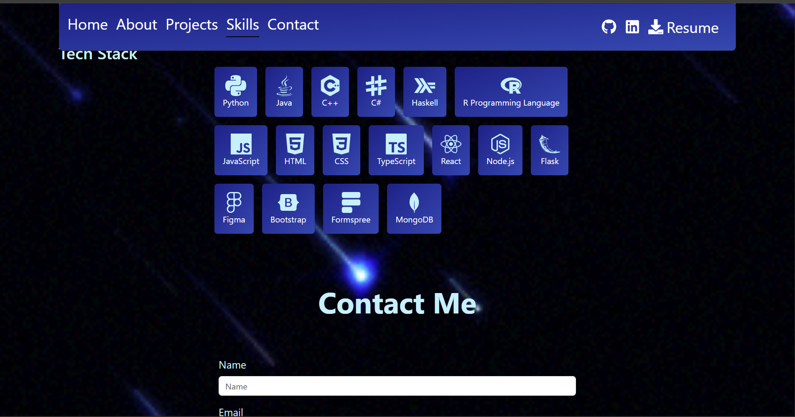

Personal Portfolio Website
- Designed and developed a personal portfolio using React, Vite, and GitHub Pages; highlights key projects and skills
in a responsive, mobile-friendly layout. Deployed independently to demonstrate frontend design, self-direction, and
deployment skills.
- Link to site
\
-

Spotify Map
- Web application that generates a 3D-visual map of the co-occurrences between Spotify Playlists to find recommendations for a user.
Implemented using the Node2Vec Python algorithm and Spotify’s integrated API and authentication. Our team is currently looking at other graph
algorithms to increase scalability.
- GitHub
Aggie Parts Picker
- Using a database that’s automatically populated with recipe information, alongside its generated embedding, from web scraping websites in
order to use RAG to create an AI model that can intuitively respond to text queries from the users about recipes of interest. The AI model then
outputs recipe information that can be sorted into meal plans (ingredients from stores or restaurants), which are then sorted into the user’s school
schedule, adjusting for travel time and distance using Google Maps API. This project is a web app created using React.
- GitHub
TBDEngine
- Created a game engine from scratch in C++ similar to Unity. I participated in the Physics team and was responsible
for implementing how objects would interact with other objects and their environment.
- GitHub